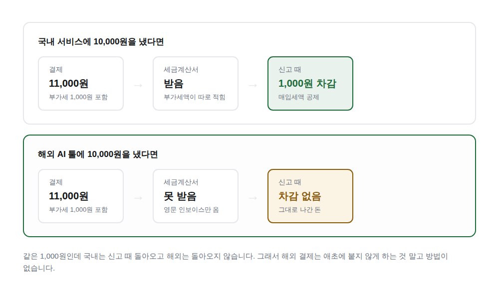

부가세 10%는 어차피 나중에 신고할 때 정리되는 돈이라고 생각하기 쉽습니다. 국내 거래에서는 대체로 맞는 이야기입니다. 해외 결제는 다릅니다.
국내에서 낸 부가세는 매입세액으로 공제받습니다.
해외 AI 툴에 낸 부가세는 공제받기 어렵습니다.
이 차이를 모르고 지나가면 매달 조용히 새는 돈이 됩니다. 연 구독이라면 한 번 놓칠 때마다 수만 원에서 수십만 원입니다.

| 국내 서비스 결제 | 해외 AI 툴 결제 | |
|---|---|---|
| 받는 증빙 | 세금계산서 신용카드매출전표 | 영문 인보이스 카드 명세서 |
| 부가세액 구분 | 따로 표시됨 | 표시 방식이 국내 서식과 다름 |
| 매입세액 공제 | 요건을 갖추면 가능 | 요건을 갖추기 어려움 |
| 결국 | 낸 만큼 신고 때 차감 | 그대로 나간 돈 |
부가세를 공제받으려면 부가세액이 따로 구분된 적격 증빙이 있어야 합니다. 그런데 해외 사업자는 국내에 사업장이 없어 우리나라 세금계산서를 발급하지 못합니다. 발급할 수 있는 것은 영문 인보이스뿐이고, 이것은 국내 부가가치세법이 요구하는 서식이 아닙니다.
완전히 사라지지는 않습니다. 비용으로는 인정됩니다. 종합소득세나 법인세를 계산할 때 경비로 들어갑니다.
다만 규모가 다릅니다. 부가세 공제는 낸 금액을 그대로 빼주는 것이고, 비용 인정은 그 금액에 세율을 곱한 만큼만 세금이 줄어드는 것입니다. 같은 10만 원이라도 앞은 10만 원이 줄고 뒤는 그보다 훨씬 적게 줄어듭니다.
그래서 결론은 하나입니다. 낸 뒤에 되찾는 방법이 마땅치 않으니, 애초에 붙지 않게 하는 것 말고는 방법이 없습니다.
결제 대행사가 해외라고 해서 판매자까지 해외인 것은 아닙니다. 국내 사업자도 해외 결제 대행사를 씁니다. 카드 명세서 앞머리에 영문 결제사 이름이 찍혔다는 이유만으로 해외 결제라고 단정하면, 받을 수 있는 공제를 놓치게 됩니다.
판매자가 국내 사업자라면 세금계산서 발급 대상이고 공제도 됩니다. 이렇게 확인하세요.
사업자등록번호를 나중에 넣어도 이미 청구된 건에는 적용되지 않습니다. 넣은 시점 이후의 결제부터 빠집니다. 소급이 안 됩니다.
그래서 이 일은 미룰수록 손해가 확정됩니다. 특히 연 결제는 다음 기회가 1년 뒤입니다.
쓰시는 툴이 열 개쯤 되면 하루에 다 못 합니다. 이 순서로 하시면 됩니다.
툴 다섯 개를 쓰는 분이 있다고 하겠습니다. 표시 금액에 부가세가 포함돼 있다고 보면 부가세는 표시 금액을 11로 나눈 값입니다.
| 서비스 | 주기 | 표시 금액 | 이 중 부가세 | 1년 기준 | 순서 |
|---|---|---|---|---|---|
| 영상 툴 | 연 | 682,813원 | 62,074원 | 62,074원 | 1순위 |
| 디자인 툴 | 연 | 220,000원 | 20,000원 | 20,000원 | 2순위 |
| 글쓰기 툴 | 월 | 44,000원 | 4,000원 | 48,000원 | 3순위 |
| 협업 툴 | 월 | 22,000원 | 2,000원 | 24,000원 | 4순위 |
| 메모 툴 | 월 | 11,000원 | 1,000원 | 12,000원 | 5순위 |
1년 기준으로는 월 결제 셋을 합친 것이 연 결제 하나보다 큽니다. 그런데도 연 결제가 1순위인 이유는 시간 때문입니다.
월 결제는 이번 달을 놓쳐도 다음 달에 하면 4,000원만 손해입니다.
연 결제는 갱신일을 놓치면 62,074원이 확정되고 다음 기회가 1년 뒤입니다.
금액이 아니라 되돌릴 수 있는 기회가 언제 다시 오는지로 순서를 정하셔야 합니다.
번호를 넣었는데 실제로 적용됐는지는 인보이스에서 확인합니다. 세 가지 경우가 있습니다.
| 인보이스에 보이는 것 | 뜻 | 할 일 |
|---|---|---|
| Tax 또는 VAT 줄에 금액이 있음 | 부가세가 붙고 있습니다 | 번호를 넣으세요 |
| 그 줄이 0.00으로 바뀜 | 적용됐습니다 | 끝났습니다 |
| 그 줄이 아예 사라짐 | 이것도 적용된 것입니다 | 끝났습니다 |
세 번째 경우를 모르고 "줄이 없어졌는데 잘못된 건가" 하고 다시 넣는 분이 있습니다. 줄이 사라진 것은 정상입니다. 총액이 줄었는지만 보시면 됩니다.
아래는 내가 쓰는 해외 AI 구독 목록이야. 나는 한국 개인사업자야. [여기에 서비스명, 금액, 주기, 다음 결제일을 붙여넣기] 각 서비스에 대해 다음을 표로 정리해줘. 1. 표시 금액에 부가세가 포함돼 있다고 보고 부가세 추정액 (금액을 11로 나눈 값) 2. 1년 기준 부가세 총액 3. 사업자등록번호를 넣어야 하는 우선순위 우선순위는 금액이 아니라 이 기준으로 정해줘. - 연 결제이면서 다음 결제일이 가까운 것이 최우선 (놓치면 1년을 기다려야 하므로) - 그다음 금액이 큰 월 결제 - 마지막으로 소액 월 결제 각 항목마다 "지금 안 하면 얼마가 확정되는지"를 한 줄로 적어줘.
| 상황 | 어떻게 |
|---|---|
| 사업자가 아닌데 쓰고 있다 | 부가세를 뺄 방법이 없습니다. 대신 안 쓰는 것을 끊는 쪽이 실익이 큽니다 |
| 간이과세자다 | 매입세액 공제 구조가 일반과세자와 다릅니다. 번호를 넣어 안 붙게 하는 것은 똑같이 유리합니다 |
| 개인카드로 결제했다 | 카드 종류와 부가세 면제는 무관합니다. 결제 정보에 사업자번호가 들어 있느냐로 갈립니다 |
| 이번 달에 이미 결제됐다 | 이번 건은 지나갔습니다. 지금 넣으면 다음 결제부터 빠집니다. 넣어 두세요 |
| 곧 해지할 서비스다 | 번호를 넣지 말고 해지하세요. 안 쓸 것에 부가세를 아끼는 것은 의미가 없습니다 |
세무대리인께 확인하세요. 이 글은 일반적인 구조를 설명한 것입니다. 공제 가능 여부와 신고 처리는 사업 형태, 업종, 과세 유형에 따라 달라집니다. 저희는 세무대리인이 아닙니다.
결제되기 전에 알려드립니다.
해외 AI 구독이 자동으로 빠져나가기 며칠 전에 미리 알려주는 무료 크롬 확장 프로그램입니다.
이 글로 안 풀리는 상황이 있으면 적어 주세요. 저희가 답을 답니다. 같은 일을 겪는 분이 그 답을 보고 갑니다.
공개로 남기기 어려운 이야기라면 stevejk911@gmail.com 으로 보내 주세요. 결제 화면이나 금액처럼 자세히 주실수록 좋습니다. 직접 확인해서 방법을 찾아 답장드립니다.